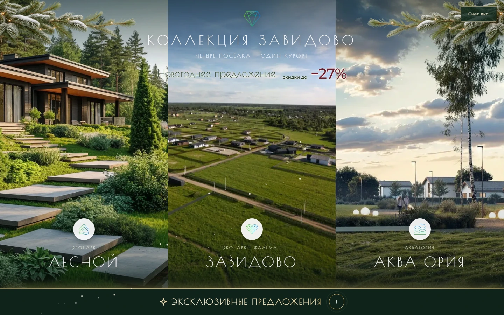
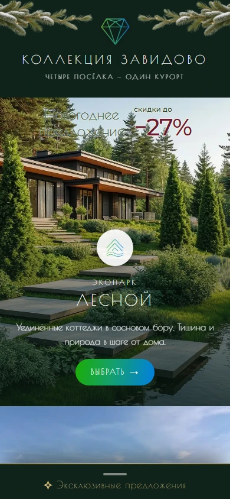
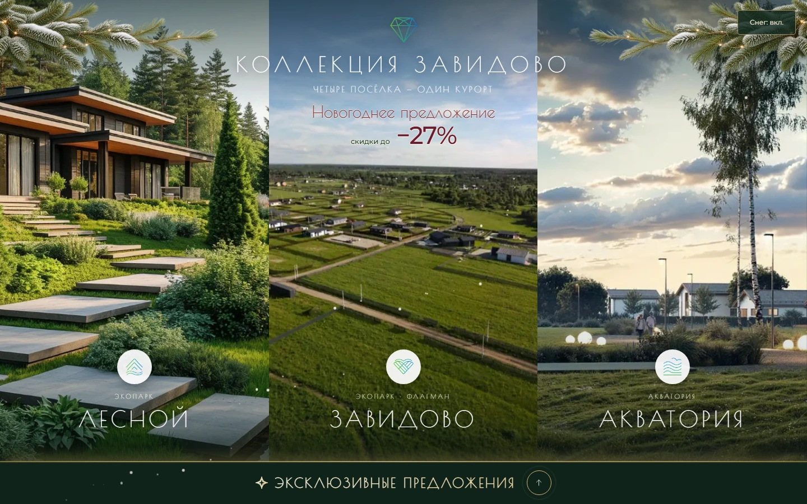

А · Горизонтальная подпись
На компьютере слова и скидка образуют одну строку под брендом. На телефоне фраза и процент стоят рядом, сохраняя небольшой размер. Самая спокойная интеграция в экран.
Открыть вариант А →

Две композиции только из букв. Фотография свободно проходит между словами и процентом; фона, рамки и замкнутого контура у акции нет.
На компьютере слова и скидка образуют одну строку под брендом. На телефоне фраза и процент стоят рядом, сохраняя небольшой размер. Самая спокойная интеграция в экран.
Открыть вариант А →

Фирменная фраза сверху, скидка под ней. Центрированная композиция делает предложение заметнее, сохраняя открытый фон и компактную высоту.
Открыть вариант Б →